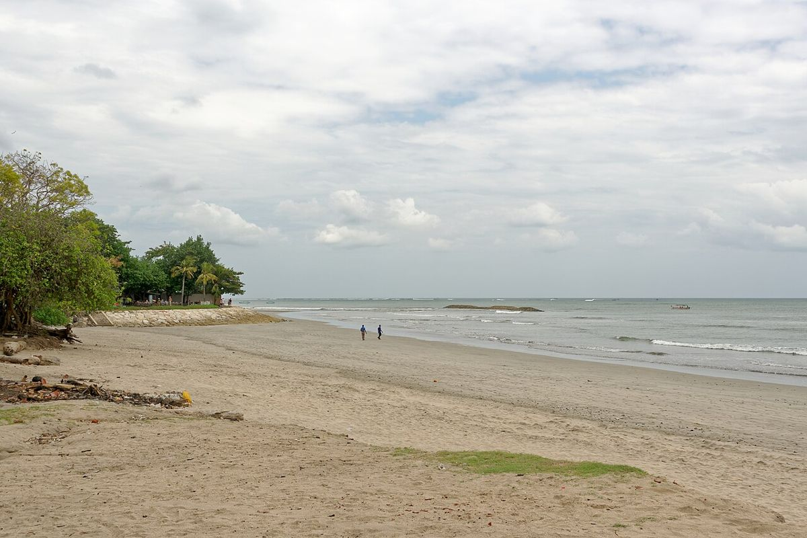
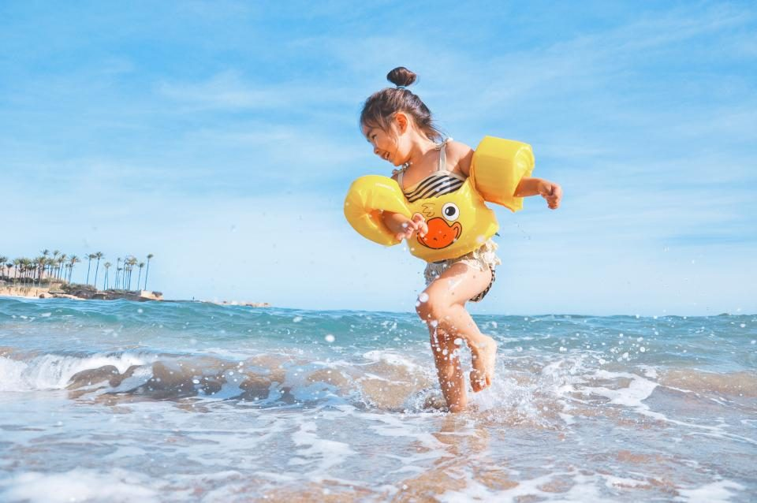
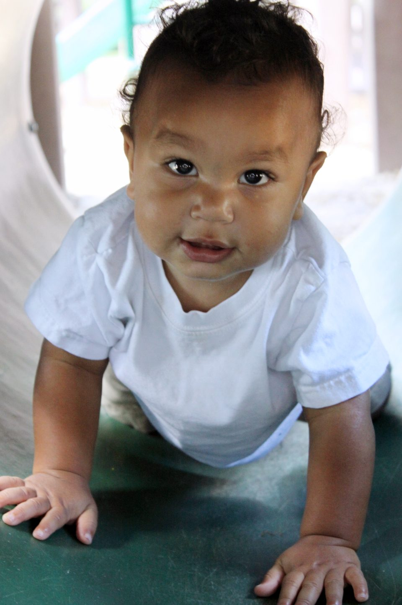

Tata e babysitter a Kuta & Legian
Vicine all'aeroporto e al Waterbom, Kuta e Legian sono una prima tappa comoda per le famiglie appena arrivate a Bali.

Photo: Jakub Hałun, CC BY-SA 4.0
Famiglie a Kuta & Legian
Grandi hotel con piscine per bambini, centri commerciali e il parco acquatico Waterbom rendono la zona pratica, soprattutto dopo un volo lungo.
Cosa fanno qui le nostre tate
Notti di jet lag con una tata notturna, pomeriggi in piscina in hotel e una giornata al Waterbom con un paio di mani in più.
Buono a sapersi
La spiaggia di Kuta ha scuole di surf per principianti ma anche correnti di risacca — nuotate tra le bandiere. Le strade sono trafficate, quindi organizziamo le uscite con brevi passeggiate e taxi.
Assistenza su misura per il vostro viaggio
Babysitter a ore
Una cena fuori, la spa, una lezione di surf — da 5 ore.

Tata a giornata intera
Spiaggia, piscina, pisolini e pasti, mentre vi godete una vera vacanza.

Tata notturna
Addormentamento, poppate e risvegli notturni, così potete dormire.

Neonati e bebè
Tate con esperienza con bambini sotto i 12 mesi.
Tata in viaggio
Vi accompagna nelle gite di un giorno e tra le isole.
Babysitting in hotel e villa
Veniamo nel vostro hotel o nella vostra villa, in tutta Bali.
Matrimoni ed eventi
Angolo bimbi e babysitter per le vostre feste.
Tata a lungo termine
Per le famiglie expat che vivono a Bali.